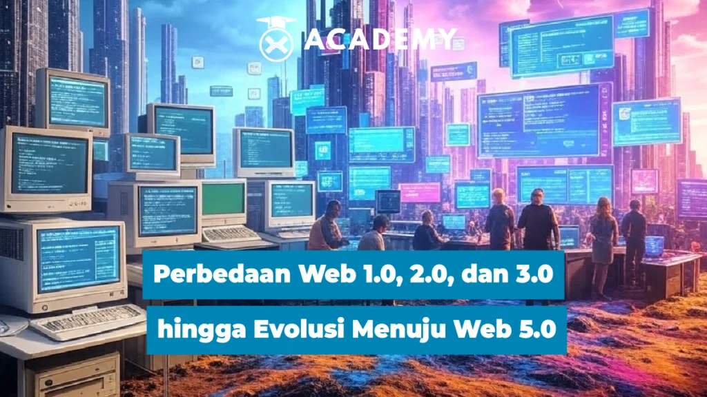

11/03/2025 Tutorial
Internet telah mengalami perkembangan pesat sejak awal kemunculannya. Dari Web 1.0 hingga Web 3.0, setiap fase membawa perubahan signifikan dalam cara pengguna berinteraksi dengan web. Kini, muncul konsep Web 5.0 yang menjanjikan revolusi baru dengan integrasi teknologi canggih.
Web 1.0 adalah generasi pertama internet yang muncul pada 1990-an. Ciri khasnya adalah halaman web statis yang hanya menampilkan informasi tanpa interaksi pengguna. Konten hanya dapat dibaca tanpa bisa diubah atau dikomentari oleh pengguna. Beberapa karakteristik utama Web 1.0 meliputi:
Web 2.0 muncul pada awal 2000-an dengan peningkatan interaktivitas dan keterlibatan pengguna. Situs seperti Facebook, YouTube, dan Wikipedia memungkinkan pengguna untuk membuat dan berbagi konten. Beberapa ciri utama Web 2.0 meliputi:
orang juga baca ini Perbedaan Web 2.0 dan 3.0 & Keunggulannya
Web 3.0 menandai peralihan ke internet yang lebih cerdas dan terdesentralisasi. Teknologi blockchain, kecerdasan buatan (AI), dan kontrak pintar memainkan peran utama dalam evolusi ini. Fitur utama Web 3.0 meliputi:
pasti mempunyai sebuah rutinitas. Apapun bentuk rutinitasnya , seluruh rutinitas tersebut bisa diketahui oleh aplikasi komputer/program/tools/device yang kita miliki yang dijalankan secara online. Jadi kemanapun seseorang pergi, dan apapun yang dilakukan semuanya direcord oleh alat-alat tersebut yang nantinya akan digunakan jika ingin mengetahui informasi apa yang dibutuhkan, bahkan teknologi ini bisa mengingatkan, menginterupsi dan memberikan informasi manakala ada perubahan dari sebuah sechedule/rutinitas, yang membantu melakukan pencarian. Inti dari Web 4.0. Dapat mengetahui apa saja yang kita lakukan, dan juga bisa membantu dalam melakukan sebuah pencarian informasi dan menyimpan histori pencarian, bahkan mempertemukan orang-orang yang mencari informasi yang sama. Menurut Seth Godin dalam blognya, syarat utama.
teknologi Web 4.0 :
Web 5.0 merupakan konsep lanjutan yang menggabungkan keunggulan Web 3.0 dengan kecerdasan emosional AI dan Internet of Things (IoT). Tujuan utamanya adalah menciptakan internet yang lebih human-centric, di mana teknologi memahami dan merespons emosi manusia dengan lebih baik.
Konsep Web 5.0 dipopulerkan oleh Jack Dorsey, pendiri Twitter, yang menekankan pentingnya internet yang lebih pribadi, aman, dan terdesentralisasi. Beberapa fitur utama Web 5.0 meliputi:
orang juga baca ini: Apa Itu Internet of Things? Bongkar Cara Kerja & Manfaatnya
AI di Web 5.0 akan memahami tidak hanya teks dan gambar tetapi juga ekspresi emosi pengguna. Teknologi ini akan diterapkan dalam berbagai sektor seperti layanan pelanggan, pendidikan, dan hiburan.
Perangkat yang terhubung dalam ekosistem IoT akan lebih cerdas dan responsif terhadap kebutuhan pengguna. Misalnya, rumah pintar yang bisa menyesuaikan suhu dan pencahayaan berdasarkan suasana hati penghuni.
Keamanan dan transparansi data semakin diperkuat dengan teknologi blockchain, di mana pengguna memiliki kontrol penuh terhadap informasi mereka.
Dengan AI yang memahami emosi, pengguna akan mendapatkan pengalaman digital yang lebih personal dan responsif sesuai kebutuhan mereka.
Web 5.0 memberikan pengguna kendali penuh atas data pribadi mereka, mengurangi risiko pelanggaran privasi yang sering terjadi di Web 2.0.
Dunia bisnis, kesehatan, dan pendidikan akan mendapatkan manfaat dari Web 5.0. Misalnya, AI dapat membantu dalam diagnosis medis berdasarkan emosi pasien atau menyederhanakan proses bisnis melalui otomatisasi yang lebih canggih.
orang juga baca ini: AI Crypto 2025: 7 Proyek yang Bisa Mendominasi Pasar
Beberapa perusahaan dan teknologi sedang mengarah pada pengembangan Web 5.0, antara lain:
Meskipun Web 5.0 berfokus pada privasi, tantangan terbesar tetap ada pada perlindungan data pribadi dan ancaman peretasan.
Teknologi baru membutuhkan waktu untuk diterima oleh masyarakat luas. Banyak bisnis dan pengguna yang masih bergantung pada Web 2.0 dan belum siap untuk transisi ke Web 5.0.
Pemerintah di berbagai negara masih mencari cara untuk mengatur blockchain, AI, dan teknologi desentralisasi agar tetap aman dan tidak disalahgunakan.
Web 5.0 adalah langkah besar berikutnya dalam evolusi internet, yang menggabungkan AI, IoT, dan blockchain untuk menciptakan pengalaman digital yang lebih personal dan aman. Meskipun memiliki potensi besar, tantangan seperti privasi, regulasi, dan adopsi masih perlu diatasi sebelum Web 5.0 dapat diterapkan secara luas.
Nah, itulah pembahasan menarik tentang Web 5.0 yang bisa kamu baca selengkapnya hanya di Akademi Crypto. Tidak hanya menambah wawasan tentang investasi, di sini kamu juga dapat menemukan berita crypto terkini seputar dunia blockchain dan kripto.
Selain itu, temukan informasi terkini lainnya yang dikemas dalam kumpulan artikel crypto terlengkap dari Indodax Academy. Jangan lewatkan kesempatan untuk memperluas pengetahuanmu di dunia investasi dan teknologi digital!